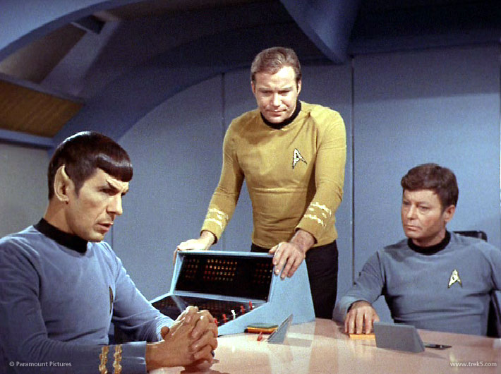

Overview¶
My inspiration:
“It is a human mind amplified by the instantaneous relays possible in a computer.” – Lt Cmdr Spock in The Ultimate Computer
Where we’re headed¶
Using a solver is mostly a matter of specifying a problem and letting a solver find the solution:
Problems well-defined are problems solved
Some of the techniques are old but have become more nuanced.
And with sufficient computation power, a number of hard problems become tractable.
Put another way:
In CS and in life, it is often easier to make the rules than it is to find a way to follow them. It is much easier to explain the game of Sudoku to a beginner than it is to solve a difficult puzzle yourself; it is much easier to critique a dish than it is to cook; it is much easier to describe a good human being than it is to be one.
Surprisingly, however, it turns out that sometimes a problem’s description (in the form of a solution-checking program) is all you need to get a solution! For some problems, with some cleverness, we can automagically turn solution-checker into a solution-finder; that is, we can turn a metaphorical critic into a metaphorical chef.
Goals¶
Show-off Python’s rich capabilities for problem solving:
- Breadth and Depth First Search
- SAT Solvers
- Reinforcement Learning
- Temporal Logic with TLA⁺ and Z3
- Generic MCTS with CNN and Reinforcement Learnig
What to keep in mind as we explore¶
- How little code in needed to express big ideas.
- How the tooling is generic and pluggable so it can be readily applied to broad class of problems.
- The examples are applied to fun toy problems at the periphery of human capability, so stretch your imagination to harder problems that would work with the same tooling.